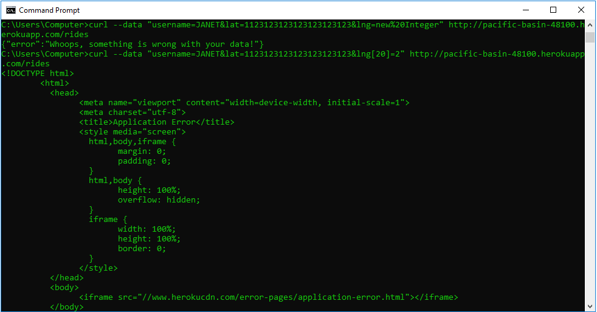
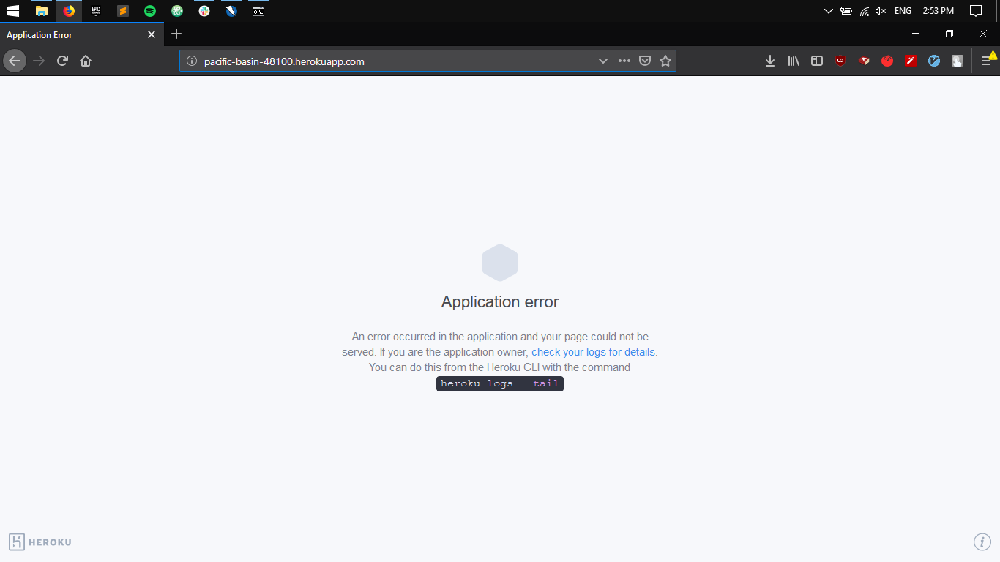
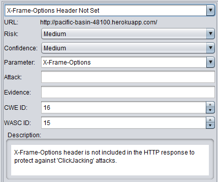
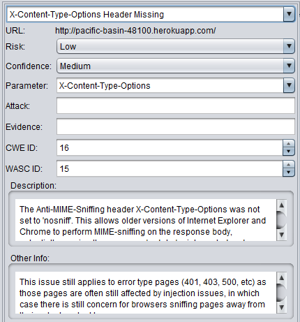
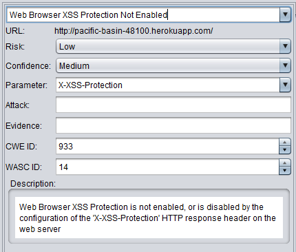

Issues Found
Application Error
Issue
Application halts with Application Error after some number of unconventional input
Location
Severity
HIGH
This is supposed to be a back-end server of a highly used app.
It cannot halt with an Application Error, if it does, it is game
over for the owners of the app.
Description
The problem occured while I was testing several payloads that had out-of-range latitudes or longitudes, and also data that included an object rather then a string. Here are the screenshots of the problem and the payloads.
Proof
 Resolution
The app must check for the exact types of the input it is getting to function properly. I highly reccomend the JOI API to validate any sort of input from the user.
Missing Headers
Issue - CWE ID: 16
The app contained missing headers in most of its responses such as the "X-Content-Type-Options" or the "X-Frame-Options" headers.
Location
Severity
MEDIUM
Even though headers are not as important as an XSS attack or data leak,
they can prevent such attacks. One of those attacks is 'ClickJacking'
attacks, where the attacker redirects the clicks to their own website.
Last but not least, X-XSS-Protection is crucial to decrease XSS vulnerabilities.
Description
This issue was found through OWASP Zap scan.
Proof
  Resolution
Such problems are easy to solve. Adding the headers can be done in expressjs. Responsible web developers must follow the convention to let the requesting party aware of the response they are getting. This is beneficial for both the client and the server.
Unchecked Location Input
Issue
The application does not check if the location input is in bound of earth, more importantly, if it includes strings or is undefined.
Location
/ridesSeverity
HIGHThis problem is crucial! It lets the client send arbitrary data to the server and get back information about passengers or vehicles. Not only that this might render the API useless, as the fact that the data returned by the API will be expected to be valid and might break applications using it.
Description
One of the tests using curl included the payload "username=test&lat=lol&lng=lol"
and the API returned an object including the vehicle information.
Proof

Resolution
The verification and the validation of data must be made as soon as the input is recieved. Again the JOI API is perfect for this. However David did a good job sanitizing the data using mongoSanitize.
Privacy
Issue
Using the information provided on the main page, a client can use the username of a vehicle to access passenger information, and a random string to access the vehicle information, rendering privacy obsolete. And the website is using the "HTTP" rather than "HTTPS"...
Location
//rides
/passenger.json
Severity
HIGHThis application is heavily dependent on location data. If it gives all of the information away without any security or authentication measures, this could end with a lawsuit.
Description
The homepage has information about vehicles providing a username to a vehicle. I used that information and through sending it to the "rides" API, I got back a list of passengers, then I queried the passenger information through "passenger.json?username=name". I had the history of the user
Proof
No proof is needed. This is a design flaw.Resolution
I highly reccomend an addition of authentication system and also making the homepage only accessible through logging in. The website also must be used through a secure protocol, for it contains sensitive information.